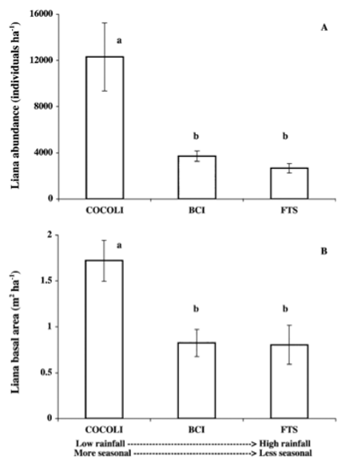
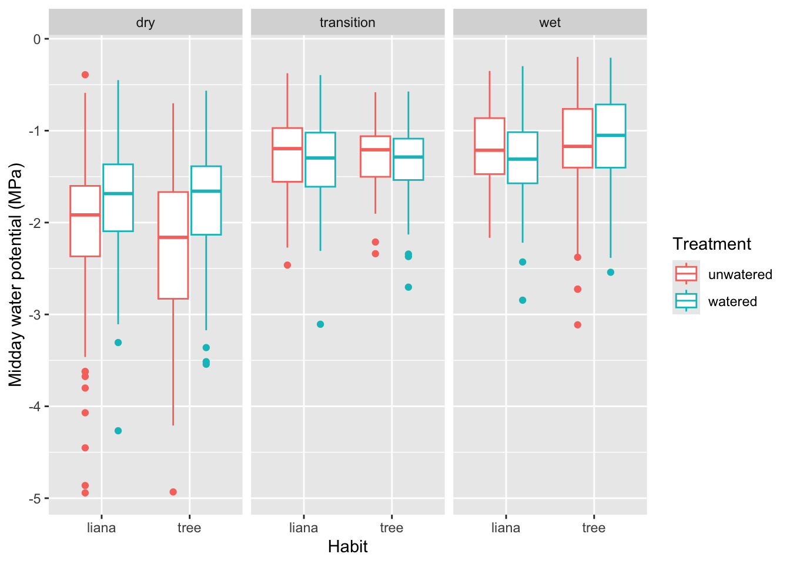

getwd()4 Individual responses to the environment: What makes lianas relatively successful in stressful habitats?

4.1 Goals
In this assignment, you will
- Investigate reasons for the unreasonable success of lianas.
- Develop and use your understanding of plant growth and responses to water deficits to help make predictions about the relative success of lianas and trees.
- Evaluate scientific hypotheses and predictions by (i) enhancing your data visualization skills using
ggplot(), and (ii) making graphs of your own design. - Background reading:
4.2 Background
- Download Smith-Martin et al. (2019), which is available in our PDF archive. Read the introduction to help you understand the context of this chapter.
The term “liana” refers to tropical woody vines, which can be very common and can account for as much as 25% of the woody plant biodiversity in some tropical forests. They achieve some of their highest abundance in seasonal subtropical forests Figure 4.1. These are regions with distinct wet and dry seasons; why are lianas successful in these seasonal subtropical forests?


One possible explanation for lianas’ success in sesonal forests might have to do with their physiology and architecture (Schnitzer 2005). Lianas may possess an unusual ability to regulate their water potential (Smith-Martin et al. 2019). In order for plants to grow and reproduce, they undergo photosynthesis, and maintaining a less negative water potential may help lianas perform better than trees in seasonal environments. (See video lectures on soils, plant photosynthesis, water potential, and heat regulation). This ability may come from the depth at which their roots grow and forage for water, their very large vessels (xylem) that carry water up through the stems, or it could be something else.
Christine Smith-Martin and her colleagues (2019, Figure 4.2) hypothesized that lianas can photosynthesize and grow better than trees during the dry season because lianas can maintain a less negative water potential than trees. To test their ideas, they set up a common garden experiment with, six liana and six tree species in replicate plots, in region of Panama with highly seasonal precipitation (Figure 4.2). They watered half of the plots, and measured a wide variety of variables including photosynthetic rate, pre-dawn and midday leaf water potential, water use efficiency, many other variables about lianas and trees.

You will evaluate the hypothesis proposed by Smith-Martin and her colleagues using their publicly available data. These data are also available in the data repository for this book.
4.2.1 Predictions
A hypothesis is an educated guess about a mechanism. The mechanism should be relatively general and could apply to a variety of species or ecosystems. In contrast, a prediction is a specific measurable result that will occur in your system if the hypothesis is correct.1
If the hypothesis of Smith-Martin and her colleagues is correct, what should happen in their experiment? What does the hypothesis will predict should happen?
Remember, they set up an outdoor experiment using lianas and trees. The factors that they controlled included,
- the growth habit (lianas and trees),
- species of the lianas and trees, and
- whether they watered to plants or not (all plants were outside and received ambient rainfall).
Of course, they had replicate plants in every condition.
In each plot and for each plant, they measured,
- pre-dawn water potential,
- midday water potential,
- difference between pre-dawn and midday water potential
- photosynthetic rate
They collected these observations in five different months:
- during the dry season (March and April),
- in the transition period between dry wet seasons (May), and
- during the wet season (September and October).
4.3 Predictions
First, describe the hypothesis (i.e. how lianas vs. tress cope with dry periods) in your own words.
Second, state two different predictions about how the factors they controlled would influence the responses they measured. Each prediction should
- be consistent with the hypothesis, and
- show the differences between lianas and trees.
Remember, they were trying to figure out why lianas are so successful in highly seasonal environments. Explain the logic of each prediction.
Third, draw with with pen(cil) and paper graphs illustrating your predictions. Take pictures of these graphs so that you can include them in your deliverables. The goal is to place side-by-side the independent variables that should differ - perhaps lianas and trees side-by-side, in a variety of situations.
Your job is to summarize the data in a way to evaluate and communicate the hypotheses. Think about how you can represent the prediction in a graph. Each graph should use variables that you think will show lianas outperforming trees under the relevant conditions.
To evaluate a hypothesis and display it visually, we generally put a cause or independent variable on the horizontal \(x\)-axis and the response or dependent variable on the \(y\)-axis. For example, in the graphs above (Figure 4.1), Schnitzer evaluated and then revealed to us the relations between deterministic causes on the x-axes and the biological responses on the y-axes.
4.4 Methods
4.4.1 Getting organized
First, we need to confirm that we are in the Rwork working directory, and import data. In RStudio, you should open your Rwork project.
Check the working directory.
Your working directory should be Rwork.
Load packages you need.
library(ggplot2)
library(dplyr)
Attaching package: 'dplyr'The following objects are masked from 'package:stats':
filter, lagThe following objects are masked from 'package:base':
intersect, setdiff, setequal, union## alternatively you could load the entire tidyverse,
## which includes ggplot2 and dplyr
# library(tidyverse)4.4.2 Import the data
- Go to our class data repository, and download
SmithMartin.csv. - Make sure the file remains in the same simple format, “comma separated values” (.csv).
- Put
SmithMartin.csvin your working directory,Rwork. - Continue to make sure the file remains in the same simple format, “comma separated values” (.csv).
The first five lines contain metadata, so we skip those when we load the data.
liana <- read.csv("SmithMartin.csv", # the CSV file name
skip=5 # skip the 5 lines of metadata
)
## Check the names of variables in the data frame
## so you know what you have
names(liana) [1] "Plot" "Tag" "Season"
[4] "Month" "Treatment" "Habit"
[7] "Species" "PredawnMPa" "MiddayMPa"
[10] "MiddayMinusPredawnMPa" "Photo.umolCO2" See for yourself the range in the numeric variables in the data set.
NumericVars <- liana[, 8:11]
summary(NumericVars) PredawnMPa MiddayMPa MiddayMinusPredawnMPa Photo.umolCO2
Min. :-3.5500 Min. :-4.942 Min. :-3.3510 Min. : 0.0483
1st Qu.:-0.6990 1st Qu.:-1.918 1st Qu.:-1.3690 1st Qu.: 4.9650
Median :-0.3940 Median :-1.472 Median :-1.0000 Median : 8.9600
Mean :-0.5411 Mean :-1.578 Mean :-1.0365 Mean : 8.9573
3rd Qu.:-0.2060 3rd Qu.:-1.105 3rd Qu.:-0.6438 3rd Qu.:12.6500
Max. :-0.0200 Max. :-0.197 Max. : 0.0420 Max. :21.6000
NA's :11 NA's :11 NA's :11 NA's :912 See for yourself the species of lianas and trees in the data set. This table() will count the number of rows associated with each species, whether it is a tree or a liana.
# use 'with' to name a data frame
with( liana,
# do something with variables in that data frame
table(Species, Habit)
# close the parenthesis
) Habit
Species liana tree
Callichlamyslatifolia 83 0
Crescentiacujete 0 78
Davillakunthii 118 0
Dipteryxoleifera 0 89
Doliocarpusmajor 114 0
Hieronymaalchorneoides 1 81
Huracrepitans 0 65
Machaeriummilleflorum 116 0
Maripapanamensis 105 0
Paulliniapinnata 98 0
Swieteniamacrophylla 0 97
Terminaliaamazonia 0 118Unless we tell it otherwise, R tends to sort words alphabetically. Months (January, February,…) have an order that is not alphabetical. Here, we make the variable Month a little more useful to us by turning it into a factor so that we can tell R how to order months.
liana <- liana %>% # Start with your data frame
## and make the change we want to the Month variable
mutate(
Month = factor(Month, levels=c("Mar", "Apr", "May", "Sep", "Oct"))
)
##...and show the unique values in Month, and also
## show us the sequential order
unique(liana$Month)[1] Apr Mar May Oct Sep
Levels: Mar Apr May Sep Oct4.5 Graphics
In this section, we continue to develop our expertise and comfort in making graphs of predictions and also in using the grammer of the ggplot2 package (Wilkinson 2005; Wickham 2016). ggplot() graphics are designed for
- maximum communication: the goal of data display is communication, to ourselves and others,
- transparency of coding: the code should be easy to read, so that the analyst and others can see what has been done, and
- ease of use: the analyst and do a lot of different things relatively easily.
4.5.1 Anatomy of ggplot()
In making a graph, we specify,
- the main function:
ggplot() - the data frame:
data= - the variables for each axis and any conditioning (these are named, oddly, “aesthetics”):
aes(...) - x and y variables:
aes(x=, y=) - conditioning variables, which allow us to show differences between levels of an independent variable :
aes(x=, y=, color=, linetype=,...) - the type of geometric display (e.g., box-and-whisker plot, scatterplot, columns, histogram, line graph, etc.):
geom_boxplot,geom_point(),geom_line(), etc. - axis labels and other annotations:
labs(x=, y=,...) - facets (how we cut the data up top show different sides of the data):
facet_wrap( ~ groups)orfacet_grid(row_groups ~ column_groups).
So, let’s try some of this.
4.5.2 Examples of ggplot()
Here we go.
A simple plot.
ggplot(data=liana, # we specify the data frame
aes(x = Month, # x-axis
y= PredawnMPa # y-axis
) ) + # close parentheses and add a plus sign to add box and whisker plot
geom_boxplot() Warning: Removed 11 rows containing non-finite outside the scale range
(`stat_boxplot()`).
Coding: Note the correspondence between the graph and the elements of the code that made the graph.
Ecology: Note the difference in predawn water potential in March and April, compared to September and Oct. What is water potential, and how does it change from the soil, to the root, stem, and leaf, and finally to the air? Remember that water moves from areas of higher moisture to areas of lower moisture, that is, down gradients of water potential from higher values to lower value, just like a ball rolling downhill. In which months is the soil driest?
Now let’s try a more complex figure, in which we add two conditioning variables, and more description label on the \(y\)-axis. We color-code the first conditioning variable is the treatment, in which plants are watered or not. The second conditioning variable is season (dry, wet or transition), and we make separate facets or panels for that.
## specifiy the data and most of the variables
ggplot(data=liana, # we specify the data frame
aes(x = Habit, # x-axis
y= MiddayMPa, # y-axis
color = Treatment # conditioning variable. Examine the output to figure out what this does.
) ) + # close parentheses and add a plus sign to add box and whisker plot
geom_boxplot() + # and add "faceting" to break it up by season.
facet_wrap(~Season) + # the season
labs(y="Midday water potential (MPa)")Warning: Removed 11 rows containing non-finite outside the scale range
(`stat_boxplot()`).
And remember that you can save a graph to your wrorking directory using ggsave() right after you make your graph, like this.
ggplot(data=liana, # we specify the data frame
aes(x = Month, # x-axis
y= MiddayMPa, # y-axis
) ) + # close parentheses and add a plus sign to add box and whisker plot
geom_boxplot()Warning: Removed 11 rows containing non-finite outside the scale range
(`stat_boxplot()`).
ggsave("myMiddayPlot.png", width=4, height=4)Warning: Removed 11 rows containing non-finite outside the scale range
(`stat_boxplot()`).The dimensions (in inches) of your saved graph dictate how big the labels and points look. If you make a small graph (e.g., width=3, height=3), the labels will look big by comparison. If you make a small graph (e.g., width=10, height=10), the labels will look small by comparison. Try it, and see for yourself.
4.6 Deliverables
Two documents:
A. The first document will contain:
- A restatement, in your own words, of the hypothesis of Smith-Martin and her colleagues.
- Two predictions of the hypothesis that you can evaluate using the data we have (see above). You should take pictures of these hand-drawn images, and put them into this document.
- Two graphs done in R that evaluate the hypothesis of Smith-Martin and her colleagues. The variables in the graphs must match the variables in you predictions.
- For each graph, identify the independent variable(s) and the dependent variable(s).
- For each graph, explain what the graph shows and what it tells us about the hypothesis. We can’t draw firm conclusions, so use terms such as “suggests”, “is consistent with”, “seems to show”, or others, which help avoid expressing unwarranted certainty. Even with careful analysis, we always have to be cautious.
B. Your second document is your R script.
Note these explanations for hypothesis and prediction may differ from those often described in statistics classes.↩︎